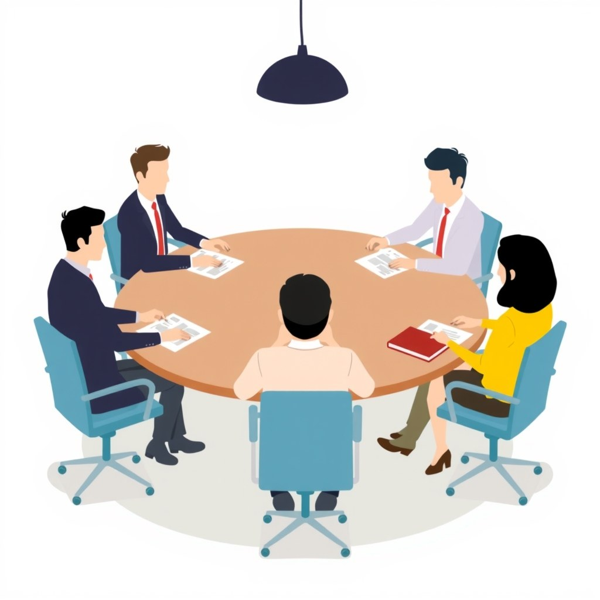

Banyak perintis usaha membayangkan bahwa jalan menuju kesuksesan dimulai saat ada pemodal besar yang bersedia menyuntikkan dana. Kita kerap merasa bahwa semakin cepat modal masuk, semakin cepat pula bisnis tumbuh dan menguasai pasar. Namun, sejarah awal perjalanan Jack Ma menunjukkan fakta yang sangat berbeda: suntikan dana tanpa perencanaan struktur hak suara yang matang justru bisa merenggut bisnis tersebut dari tangan pendirinya sendiri.
Dalam buku biografinya yang berjudul Alibaba: The House That Jack Built karya Duncan Clark, tercatat bahwa Jack Ma harus melewati pengalaman pahit kehilangan kendali sebelum akhirnya berhasil membangun fondasi kemitraan yang kokoh di Alibaba. Bagi pelaku usaha kecil dan pemilik jenama di Indonesia, memahami cerita ini adalah benteng pertahanan terbaik agar kerja kerasmu tidak beralih menjadi milik orang lain di tengah jalan.
Mulanya dari mana

Sebelum nama Alibaba dikenal dunia, Jack Ma mendirikan China Pages pada tahun 1995 di Hangzhou. Waktu itu, internet masih menjadi barang yang sangat asing di Tiongkok. Sebagian besar pengusaha lokal bahkan belum pernah melihat wujud komputer yang tersambung ke jaringan global. Jack Ma melihat peluang untuk membantu perusahaan-perusahaan lokal memajang profil produk mereka agar bisa ditemukan oleh calon pembeli dari luar negeri.
Langkah awalnya sangat sederhana dan penuh tantangan operasional. Untuk membuktikan konsepnya, China Pages berhasil mengamankan kontrak senilai 10.000 yuan dari sebuah klien di industri tekstil lokal. Uang tersebut digunakan untuk menyewa ruang kerja sempit dan membayar upah segelintir staf awal yang membantunya mengetik serta menerjemahkan profil bisnis ke bahasa Inggris.
Namun, mengedukasi pasar yang belum matang membutuhkan napas kas yang panjang. Memasuki akhir tahun 1995, China Pages kekurangan kas untuk membayar gaji staf dan berada dalam kondisi yang sangat rentan secara finansial. Pemasukan dari penjualan jasa pembuatan profil halaman web tidak cukup cepat untuk menutup biaya operasional bulanan, sementara biaya sambungan telepon dan sewa kantor terus berjalan.
Kondisi rentan ini membuat posisi tawar Jack Ma melemah. Ketika sebuah badan usaha milik negara (BUMN) telekomunikasi lokal bernama Zhejiang Telecom mulai melirik potensi internet dan mendirikan unit usaha saingan yang mendaftarkan nama domain serupa, Jack Ma dihadapkan pada pilihan sulit: bersaing mati-matian tanpa modal atau menerima tawaran penggabungan usaha.
Titik baliknya

Pada Februari 1996, jalan keluar yang tampak manis akhirnya diambil. China Pages sepakat membentuk ventura bersama dengan Dife-Hope, sebuah entitas yang didukung oleh Zhejiang Telecom. Dalam kesepakatan tersebut, Dife menyuntikkan investasi modal sebesar 1,4 juta renminbi atau setara 170.000 dolar AS untuk menguasai 70% saham ventura bersama tersebut.
Sebagai gantinya, seluruh aset, operasional, dan merek China Pages milik Jack Ma dinilai sebesar 600.000 renminbi atau sekitar 70.000 dolar AS, yang dikonversi menjadi 30% sisa saham. Di atas kertas, masalah kekurangan kas langsung selesai seketika karena bisnis kini didukung dana segar dan nama besar institusi milik negara.
Namun, di sinilah titik bencana dimulai. Komposisi kepemilikan modal tersebut langsung diterjemahkan menjadi komposisi kursi dewan direksi: pihak pemodal menguasai 5 kursi suara, sedangkan Jack Ma dan timnya hanya diberi 2 kursi suara. Setiap kali Jack Ma mengajukan usulan strategis mengenai cara melayani pelanggan secara cepat, usulan tersebut selalu dimentahkan melalui pemungutan suara oleh para birokrat yang mendominasi kursi rapat.
Situasi menyesakkan ini dicatat langsung oleh Duncan Clark dalam bukunya lewat kutipan Jack Ma:
"When the joint venture was formed, disaster followed. They had five votes on the board, and we had two."
Analogi sederhananya adalah seperti menumpang di mobil orang lain yang memegang setir penuh. Kamu memang diajak duduk di dalam kendaraan yang bagus, tetapi mereka yang memutuskan kapan harus belok, kapan harus berhenti, dan ke mana arah perjalanan dituju. Jika arah mereka berbeda dengan tujuanmu, kamu tidak memiliki daya untuk memutar roda kemudi.
Apa yang terjadi setelahnya
Merasa visi bisnisnya terbelenggu dan tidak lagi memiliki wewenang untuk menentukan arah masa depan perusahaannya, Jack Ma mengambil keputusan drastis. Pada November 1997, Jack Ma secara resmi melepaskan sisa 30% sahamnya di China Pages dan keluar dari perusahaan yang ia bangun dari nol tersebut.
Jack Ma kemudian memboyong tim intinya pindah ke Beijing untuk bekerja di bawah unit Kementerian Perdagangan Luar Negeri dan Kerja Sama Ekonomi Tiongkok (MOFTEC). Di kementerian ini, tugasnya adalah memimpin divisi pengembangan situs web perdagangan luar negeri pemerintah. Langkah ini memberinya dua hal penting: pengalaman mendalam memahami rantai pasok ekspor-impor skala nasional dan waktu untuk merenungi kegagalan struktur bisnisnya di masa lalu.
Ketika Jack Ma kembali ke Hangzhou pada tahun 1999 untuk mendirikan Alibaba bersama 17 rekan lainnya di apartemen kediamannya, ia tidak mengulangi kesalahan yang sama. Walaupun Alibaba nantinya menerima suntikan dana puluhan juta dolar dari investor internasional raksasa seperti Goldman Sachs dan SoftBank, Jack Ma merancang sistem tata kelola dan struktur kemitraan khusus (Alibaba Partnership) yang memastikan kendali visi dan hak penunjukan dewan direksi tetap berada di tangan para pendiri.
Pengalaman pahit kehilangan China Pages menjadi bahan bakar utama yang melahirkan sistem pengendalian kepemilikan paling kokoh dalam sejarah perdagangan digital modern.
Pola yang bisa kamu tiru
Kisah kegagalan dan kebangkitan Jack Ma menyisakan pola kerja nyata yang bisa langsung diterapkan oleh pelaku usaha kecil, pengelola toko daring, maupun penyedia jasa di Indonesia saat menghadapi tawaran kerja sama permodalan:
Pisahkan porsi bagi hasil modal dari hak suara operasional
Jangan pernah menyerahkan mayoritas hak suara keputusan operasional hanya karena mitra menyuntikkan dana lebih besar. Tuliskan dalam perjanjian tertulis bahwa penentuan produk, strategi pemasaran, dan operasional harian tetap berada di tangan pengelola aktif, bukan pemodal pasif.
Gunakan kegagalan awal untuk merancang ulang tata kelola bisnis
Ketika kamu mengalami kerugian kerja sama atau perselisihan bagi hasil, jangan berhenti pada rasa kecewa. Catat di mana letak kelemahan klausul kontrakmu, lalu perbaiki SOP kemitraan tersebut untuk proyek usahamu yang berikutnya.
Pimpin dengan visi dan kejelasan arah, bukan sekadar setoran uang
Pemodal bisa datang dan pergi membawa uang, tetapi pelanggan dan tim setia hanya akan bertahan bersama pemimpin yang tahu persis ke mana produk akan dibawa. Nilai tawar utamamu sebagai perintis adalah pemahaman mendalam tentang kebutuhan pembeli di lapangan.
Bagi kamu yang sedang mengembangkan toko atau jenama sendiri, menjaga keunikan posisi dan struktur penawaran sangat krusial. Kamu bisa membaca panduan praktis kami mengenai cara keluar dari perang harga e-commerce untuk UMKM agar margin usahamu cukup sehat untuk membiayai operasional mandiri tanpa terburu-buru bergantung pada modal luar.
Selain itu, untuk pemilik toko luring yang sedang memperluas jangkauan ke ranah digital, simak juga artikel tentang cara bersaing dengan marketplace untuk toko fisik guna memperkuat saluran penjualan langsung ke konsumen.
Biar jujur: yang tidak bisa ditiru
Kegagalan China Pages bukan semata-mata karena Jack Ma kurang gigih, melainkan karena ia mendirikan perusahaannya terlalu cepat sebelum infrastruktur internet di Tiongkok benar-benar siap menopang transaksi digital. Selain itu, ada ketidakberdayaan nyata saat berhadapan dengan anak perusahaan BUMN telekomunikasi yang bahkan sanggup mendaftarkan nama domain yang sangat mirip dengan usahanya untuk mematikan persaingan secara sepihak.
Di sisi lain, kebangkitan Jack Ma setelah meninggalkan China Pages juga terbantu oleh kesempatan unik yang sulit diulang oleh pengusaha biasa hari ini. Posisi kerjanya di Kementerian MOFTEC di Beijing memberinya akses langsung ke jaringan pejabat perdagangan luar negeri dan pemahaman mendalam tentang regulasi negara yang sedang bersiap membuka diri ke pasar global.
Konteks zaman, momentum infrastruktur nasional, dan kesempatan bekerja di lingkaran kementerian adalah faktor kebetulan sejarah yang tidak bisa ditiru mentah-mentah. Namun, prinsip kehati-hatian dalam menandatangani porsi pembagian saham dan hak veto operasional adalah ilmu universal yang berlaku bagi siapa pun yang sedang merintis usaha saat ini.
Jalan terbaik adalah mengamankan kontrol atas dapur bisnismu sendiri sejak hari pertama, memvalidasi produk secara bertahap, dan tidak mudah tergiur iming-iming modal besar yang menuntut penyerahan kendali penuh.
Sumber
- Alibaba: The House That Jack Built — HarperCollins Publishers (Duncan Clark) · Buku Biografi Resmi hal. 102-103